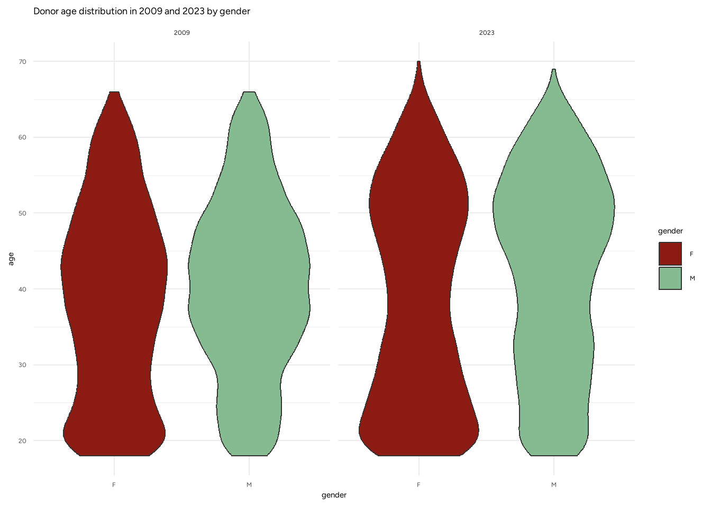
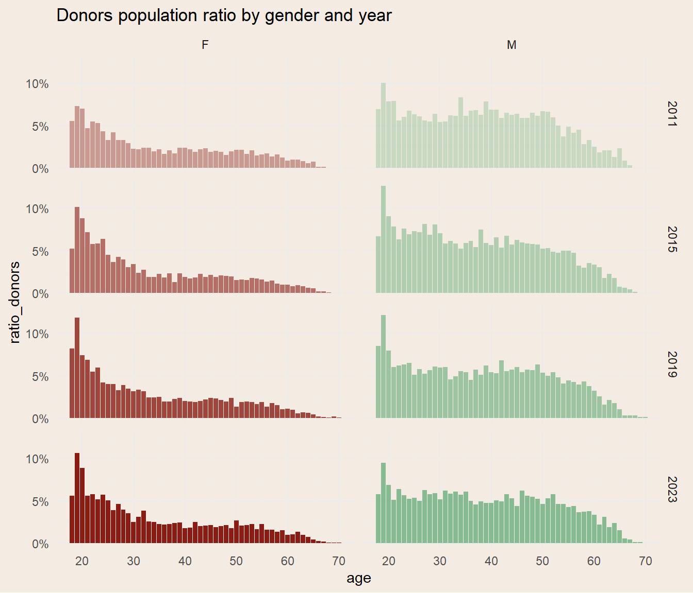

| Sample of the dataset cleaned | ||||||||||
|---|---|---|---|---|---|---|---|---|---|---|
| The sample was stratified by the variables donation_type and gender | ||||||||||
| donor class | donation type | birth year | birth cohort | first donation year | first donation cohort | number of donations | gender | year | age | unique number |
| P | SANGUE | 1990 | 1990 | 2010 | 2010 | 1 | F | 2014 | 24 | 26904945 |
| P | PLASMAF | 1952 | 1950 | 1992 | 1990 | 5 | M | 2010 | 58 | 26460990 |
| P | SANGUE | 1965 | 1965 | 2011 | 2010 | 2 | M | 2015 | 50 | 26976633 |
| P | AFPLTPLASM | 1959 | 1955 | 1982 | 1980 | 2 | F | 2019 | 60 | 26476458 |
| P | PLASMAF | 1960 | 1960 | 2003 | 2000 | 4 | F | 2014 | 54 | 26777100 |
| P | AFPLTPLASM | 1973 | 1970 | 1996 | 1995 | 4 | M | 2019 | 46 | 26550549 |
| P | PLTAFE | 1967 | 1965 | 2005 | 2005 | 1 | M | 2010 | 43 | 26830845 |
| P | PLTAFE | 1955 | 1955 | 2004 | 2000 | 1 | F | 2015 | 60 | 26801727 |
2 Introduzione
L’obiettivo di questa tesi è proporre — e validare empiricamente — un framework statistico per la previsione delle donazioni di sangue nel territorio Giuliano-Isontino, con orizzonte annuale.
La scelta di concentrare l’analisi sulla provincia di Trieste è motivata da tre fattori:
Alta densità di donatori rispetto alla popolazione residente: il territorio triestino è storicamente virtuoso nella raccolta di sangue; ciò rende disponibili serie temporali lunghe e relativamente complete.
Stabilità del bacino d’utenza: la popolazione residente ha oscillazioni demografiche contenute, riducendo la variabilità “esterna” dovuta a migrazioni massicce. A differenza di grandi città, come Milano e Roma dove i flussi migratori sono hanno un impatto maggiore.
Accesso a dati granulari: l’ASUGI ha messo a disposizione un estratto anonimo dei registri donatori 2009-2023 che, pur privo di variabili sensibili, contiene informazioni anagrafiche e cronologia donativa sufficienti per la modellazione.
Nella pratica quotidiana i centri trasfusionali devono rispondere alla domanda clinica garantendo un buffer di scorte: sovrastimare i lotti in scadenza comporta costi di smaltimento, mentre sottostimare la raccolta può generare situazioni critiche con rinvii di interventi chirurgici programmati.
Pertanto, è cruciale disporre di strumenti predittivi che stimino:
la probabilità che un donatore torni a donare l’anno successivo;
la distribuzione del numero di donazioni attese per singolo individuo;
i profili latenti di comportamento (frequente, saltuario, non-donatore, ecc.) e la loro evoluzione nel tempo.
A fronte di tali esigenze la tesi si articola in due nuclei metodologici:
Generalized Linear Models (GLM) per stimare il numero cumulato di donazioni nell’orizzonte storico, con diverse famiglie di distribuzione (quasi-Poisson, Tweedie, Gamma).
Hidden Markov Models bayesiani con covariate, in cui il numero di donazioni annue è trattato come emissione di una variabile di stato latente.
Il fitting è condotto mediante Variational Inference (Pyro), consentendo di gestire milioni di osservazioni con tempi computazionali compatibili al problema.
A corredo dei modelli è stata sviluppata una dashboard interattiva Quarto + Shiny che consente al personale medico di:
filtrare la popolazione (età, genere, anno di prima donazione, ecc.);
visualizzare la probabilità di transizione fra stati latenti;
2.1 I Dati
In Italia possono donare sangue le persone di età compresa tra i 18 e i 65 anni, con un peso corporeo superiore ai 50 kg e in buono stato di salute. Gli uomini e le donne non in età fertile possono donare sangue intero ogni 3 mesi, mentre le donne in età fertile possono farlo 2 volte l’anno.
La donazione di sangue nel contesto italiano è il frutto di un sistema dove stakeholder del settore pubblico (regioni, centri ospedalieri), privato (associazioni non profit) e cittadini contribuiscono attivamente al buon esito di questo processo (Guglielmetti Mugion et al., 2021). La creazione del Centro Nazionale Sangue (CNS) e del Registro nazionale del sangue nel 2007 ha trasformato l’assetto organizzativo della donazione del sangue in Italia. Il CNS è stato istituito con Decreto del Ministro della Salute del 26 aprile 2007 e ha iniziato il suo mandato il 1° agosto dello stesso anno. Il CNS svolge funzioni di coordinamento e controllo tecnico-scientifico del sistema trasfusionale nazionale nelle materie disciplinate dalla legge n. 219 del 21 ottobre 2005 “Nuova disciplina delle attività trasfusionali e della produzione nazionale degli emoderivati” e dai decreti di trasposizione delle direttive europee. All’interno di tale sistema sono presenti le Strutture Regionali di Coordinamento per le attività trasfusionali (SRC). Le SRC sono strutture tecnico-organizzative delle Regioni e Province Autonome che garantiscono il supporto alla programmazione nazionale in materia di attività trasfusionali e il coordinamento e controllo tecnico-scientifico della rete trasfusionale regionale, in sinergia con il Centro Nazionale Sangue. Queste strutture regionali, anche definite Centri Regionali Sangue, detengono la responsabilità della raccolta e gestione delle donazioni di sangue a livello regionale.
Nel corso degli anni, il Ministero della Salute ha visto un significativo supporto dalle associazioni attive nel campo delle donazioni, come AVIS (Associazioni Volontari Italiani Sangue), FRATRES (Consociazione Nazionale dei Gruppi Donatori di Sangue Fratres delle Misericordie d’Italia), FIDAS (Federazione Italiana Associazioni Donatori di Sangue), Croce Rossa Italiana. Queste organizzazioni svolgono un ruolo cruciale nel promuovere attivamente la pratica della donazione del sangue: sebbene la decisione di donare sia una scelta individuale, è infatti importante sottolineare il ruolo essenziale che esse svolgono nell’informare e nel fungere da ponte tra le istituzioni (scuole incluse) e i cittadini. La pratica del dono del sangue, peraltro, produce capitale sociale non solo per il dono di una parte di sé in quanto tale, ma anche grazie alla partecipazione sociale all’interno delle organizzazioni che la promuovono.
La letteratura riguardante il dono nel sangue nel contesto italiano si è concentrata principalmente sui donatori e sulle motivazioni al dono. Molte delle ricerche sono state svolte in collaborazione con l’AVIS, probabilmente perché la raccolta di informazioni riguardanti le unità di sangue donate si è sistematizzata a livello nazionale solo dal 2007 con l’istituzione del CNS e la creazione del registro nazionale sangue, come descritto poc’anzi. Le ricerche hanno sovente utilizzato dati raccolti intervistando i donatori (sia attraverso strumenti standardizzati, sia con approcci di tipo qualitativo). Nei prossimi paragrafi utilizzeremo i dati sulle donazioni di sangue a livello territoriale, ma prima di entrare nel dettaglio sulle differenze geografiche delle donazioni di sangue pare opportuna una sintetica ricognizione sui principali aspetti emergenti da tali ricerche condotte nel contesto italiano.
Un’analisi approfondita condotta da Lacetera e Macis (2013) sui dati AVIS relativi al periodo 1983-2006, focalizzata su una città del centro-nord Italia, ha quantificato l’impatto della Legge 584 del 1967, che ha stabilito il riconoscimento del diritto a una giornata di riposo dal lavoro e alla piena retribuzione al donatore di sangue, sulle pratiche di donazione. Lo studio ha rilevato che l’applicazione di tale normativa ha indotto i donatori a effettuare, in media, una donazione aggiuntiva all’anno. Attraverso un’analisi comparativa delle frequenze di donazione associate ai diversi stati occupazionali assunti dal medesimo individuo, i ricercatori hanno evidenziato una correlazione significativa tra l’occupazione e la propensione alla donazione.
I risultati hanno dimostrato che, in media, quando un individuo è occupato e quindi idoneo a beneficiare dell’incentivo del giorno di riposo retribuito, la frequenza annuale delle donazioni aumenta di circa un’unità rispetto ai periodi di non occupazione.
La decisione di donare sangue è fortemente influenzata da fattori personali e sociali. Una ricerca condotta a Bergamo nel 2006 (Bani, Strepparava, 2011) ha mostrato che il 50% dei donatori è stato motivato dal confronto con amici e familiari, ma anche l’aver ricevuto trasfusioni o conoscere qualcuno che ha beneficiato di una trasfusione hanno avuto un impatto significativo, aumentando la frequenza delle donazioni e la propensione a persuadere altri a donare. Questi risultati evidenziano l’importanza delle relazioni personali e delle esperienze dirette nella promozione della donazione di sangue, confermando il forte legame emotivo e sociale che spinge le persone a donare.
Anche il lavoro delle associazioni, come ricordato, è fondamentale. Esse contribuiscono all’incremento di capitale sociale sia costruendo relazioni con le istituzioni locali, sia creando partecipazione e attivazione attraverso diverse iniziative che mirano allo sviluppo di senso di comunità e appartenenza (Saturni, 2013).
I giovani che partecipano all’AVIS (Bassi et al., 2024), percepiscono l’associazione non solo come un’opportunità per donare il sangue, ma anche come un punto di riferimento fondamentale per la comunità. All’interno della ricerca di Bassi e colleghi gli intervistati sottolineano il ruolo dell’AVIS come infrastruttura sociale capace di promuovere la coesione e l’inclusione. Essi vedono nel volontariato un’occasione per tessere relazioni, costruire reti e contribuire attivamente alla vita della comunità, confermando così l’importanza delle associazioni come presidi territoriali e promotori del capitale sociale.(Bordandini 2025)
Fonte ed Elaborazione
| campo | descrizione |
|---|---|
donor_class |
classificazione del donatore |
donation_type |
categoria (SANGUE, PLASMA, PIASTRINE, …) |
birth_year |
anno di nascita |
birth_cohort |
coorte di nascita, generazione (1970, 1975, 1980, …) |
first_donation_year |
anno della prima donazione registrata |
first_donation_cohort |
coorte della prima donazione registrata |
number of donations |
numero di donazioni effettuate nel determinato anno |
gender |
M/F |
year |
anno di riferimento delle donazioni |
age |
età del donatore |
unique_number |
identificativo anonimo del donatore |
I dati provengono dall’estrazione e anonimizzazione di dati provenienti dal data warehouse dell’Azienda Sanitaria Universitaria Giuliano Isontina (ASUGI). I dati vengono forniti in formato Il dataset primario proviene dal sistema informativo dei centri trasfusionali dell’ASUGI e contiene le donazioni fatte da un individuo in un determinato anno, corredate di ulteriori informaizoni, riportate nella Tabella 2.1.
Anche se i dati provengono da un datawarehouse che rispetta protocolli nella gestione del dato, è comunque necessaria una fase di ETL (Extract, Transform, Load). Ovvero l’estrazione e la trasformazione del dato in modo da adattarlo e arrichirlo ai nostri scopi specifici. Il lavoro viene svolto mediante il linguaggio di programmazione statistica R, e la libreria tidyverse, una libreria contente funzioni per la manipolazione dei dati garantendo leggibilità del codice e velocità d’esecuizione.
La tabella originale è composta da 268.530 righe, una per ogni donatore e per ogni anno nella quale abbia donato. Tuttavia sono presenti record duplicati (171.378).
I passi principali compiuti sono i seguenti:
rimozione record duplicati (
janitor::get_dupes);sostituzione di
NAcon 0 nei conteggi annuali;derivazione di età =
year-birth_yeare classi d’età quinquennali;standardizzazione (
z-score) dibirth_yeareageper facilitare la convergenza dell’ottimizzatore nei modelli bayesiani;aggiunta della variabile dummy Covid;
creazione di tre matrici di covariate:
\(x^\pi\) (fisse per donatore): anno di nascita e genere;
\(x^A_{t}\) (tempo-varianti): età categorica e dummy Covid;
\(x^{em}_{t}\) (tempo-varianti): età categorica, dummy Covid e genere.
La derivazione dell’età sarà utile per avere una variabile dinamica, che varia nel tempo. Infatti si presuppone che la propensione al donare vari con l’età del donatore, ed avendo osservazioni pluriennali, si ritiene opportuno tenere in considerazione ciò. Però, anche il fattore generazionale può influire, ovvero una persona di 50 anni del 1970 può avere una propensione nel donare diversa di un cinquantenne nato 10 anni prima. Questo potrebbe essere dovuto da fattori generazionali e anch’esso andrà incluso nelle analisi. Infine, in molte analisi condotte, è stata utilizzata la variabile età come categoriale, anziché numerica.
Nei primi 10 giorni di marzo 2020, all’inzio della pandemia SARS-CoV-2, le donazioni di sangue in Italia sono state quasi nulle, per poi passare ad un forte aumento. Il Centro Nazionale Sangue (CNS), l’autorità nazionale competente, pubblicò linee guida chiare per permettere la continuazione dei prelievi di sangue ed evitare un’interruizione della catena di approvigionamento della raccolta di materiale trasfusionale. (Pati et al. 2021)
Infine, le osservazioni vengono aumentate, ossia vengono aggiunte le donazioni pari a 0 negli anni in cui non abbiamo il dato di uno specifico donatore. Si ipotizza che quando il dato non venga raccolto non ci siano donazioni da parte dell’individuo. Questa è un’ipotesi forte, infatti ci potrebbero essere diverse ragioni per la mancanza del dato e non solo la mancata donazione. Ad esempio, l’individuo si sarebbe potuto trasferire, o avrebbe potuto decidere di donare in un centro trasfusionale differente da quello da noi analizzato, ossia il centro trasfusionale dell’ASUGI.
Analisi Preliminare
L’Italia, come molti altri paesi del mondo, è affetta dal fenomeno generazionale del baby boom, ovvero da un notevole incremento delle nascite negli anni 50-60, dovuto a vari fattori, tra cui la forte crescita economica. Questo fenomeno è oggetto di studio in diversi ambiti, uno tra i quali è l’ambito assicurativo, dove ci si preoccupa se le generazioni più giovani saranno in grado di sopportare il sistema pensionistico quando i baby boomers andranno in pensione. Lo stesso discorso vale per le donazioni di sangue, in quanto i donatori saranno meno e coloro che necesiteranno di sacche di sangue sarà sempre maggiore. Questo fenomeno generazionale si può osservare dalla Figura 2.1 dove si osserva unon spostamento nella “gobba” verso l’alto dal 2009 al 2023. Le donazioni provengo maggiormente dagli uomini, tuttavia si osserva (vedi Tabella 2.3) come questo gap si sti riducendo nelle nuove generazioni, grazie anche alla efficace comunicazione dei centri di trasfusione.

| 2009 | 2023 | ||
|---|---|---|---|
| F | (20,30] | 802 | 866 |
| (30,40] | 872 | 590 | |
| (40,50] | 962 | 713 | |
| (10,20] | 341 | 398 | |
| (50,60] | 574 | 729 | |
| (60,70] | 136 | 175 | |
| M | (20,30] | 1286 | 1142 |
| (30,40] | 2275 | 1249 | |
| (50,60] | 1164 | 1685 | |
| (40,50] | 2362 | 1649 | |
| (60,70] | 350 | 379 | |
| (10,20] | 358 | 382 | |
2.2 Integrazione dei Dati
Le analisi eseguite finora sono state condotte sui donatori e le loro donazioni, mostrandoci caratteristiche e pattern fondamentali sulle donazioni. Tuttavia, per un’analisi più approfondita è necessario tenere in considerazione anche quella parte di popolazione che non dona, e che, di conseguenza, non risulta essere presente nei dati a noi disponibili.
L’obiettivo è di integrare il database che possediamo con ulteriori informazioni che potrebbero arrichire le analisi e aggiungere informazioni ai modelli.
I dati in nostro possesso sono la raccolta delle donazioni presso le strutture sanitarie dell’ASUGI, ovvero dell’Azienda Sanitaria Universitaria Giuliano Isontina, ovvero che i dati in nostro possesso provengono dai centri trasfusionali del territorio di Trieste e Gorizia. Tuttavia, ciò non indica che le donazioni provengano da cittadini residenti nel territorio Giuliano-Isontino. Infatti, le donazioni sono aperte a tutti, anche a cittadini stranieri, come potrebbe essere uno studente durante il suo progetto Erasmus a Trieste. Andranno fatto, quindi, delle assunzioni per semplificare la realtà. Si ipotizza che le donazioni provengono solo da residenti del territorio. Possiamo allora integrare i dati con le informazioni sui residenti.
Le informazioni provengono dal database pubblico dell’Istituto Nazionale di Statistica, ISTAT. I dati in formato tabulare contengono informazioni di vario genere, tra cui il genere, l’anno, la popolazione e lo stato civile. I dati vengono quindi processati e adattati ai dati sulle donazioni di sangue.
Stima dei Residenti Passati
L’ISTAT diffonde serie complete per il 2019–2023, mentre il nostro dataset copre il periodo a partire dal 2009. Per ricostruire a ritroso la popolazione residente nel capoluogo giuliano adottiamo un approccio in due passi. Primo, richiamamo l’identità di bilancio demografico, che regola l’evoluzione della popolazione residente (cfr. {ISTAT (2023a)}):
\[ P_t = P_{t-1} + N_t - M_t + I_t - E_t \]
dove \(P_t\) è la popolazione a fine anno \(t\), \(N_t\) i nati vivi, \(M_t\) i decessi, \(I_t\) gli iscritti per migrazione ed \(E_t\) i cancellati per migrazione.
Per ricostruire a ritroso la popolazione residente nel capoluogo giuliano (2009–2018) adottiamo il metodo di retroproiezione per coorti (“reverse life-table”), che utilizza i sopravviventi \(l_x\) dalle tavole di mortalità per risalire alla consistenza delle coorti alle età precedenti (cfr. {Caselli, Vallin, e Wunsch (2006)}; per definizioni e stima di \(l_x\) nelle tavole ISTAT si veda {ISTAT (2023b)}). La formulazione operativa impiegata è:
\[ n_{x}^{y_i} = n_{\,x-(y_i-y_j)}^{\,y_j}\, \frac{\,l_x}{l_{\,x-(y_i-y_j)}} \,, \]
dove \(n_x^{y_i}\) è l’effettivo alla età \(x\) al tempo \(y_i\), \(n_{x-(y_i-y_j)}^{y_j}\) è l’effettivo della medesima coorte alla età \(x-(y_i-y_j)\) osservato (o stimato) al tempo \(y_j\), e il rapporto \(\frac{l_x}{l_{x-(y_i-y_j)}}\) rappresenta la probabilità di sopravvivenza tra le due età secondo la tavola di mortalità di riferimento. In mancanza di flussi migratori comunali completi, si assume, in prima approssimazione, migrazione netta nulla o costante e si verifica la robustezza dei risultati tramite analisi di sensitività.
Nota sulle tavole SIM/SIF 02
Con “SIM/SIF 02” si fa riferimento a una delle serie ufficiali di tavole di mortalità pubblicate da ISTAT, per età singola e per sesso, che riportano le principali funzioni di tavola (in particolare i sopravviventi \(l_x\), le probabilità \(q_x\), i decessi \(d_x\) e gli esposti \(L_x\)) e costituiscono la base standard per calcoli di sopravvivenza e retroproiezione a livello nazionale.
Unione dei Dati
La join tra il registro dei donatori e il dataframe con i residenti consente di costruire un indicatore di “penetrazione” (quota di donatori sulla popolazione residente), disaggregato per anno, classe d’età e genere. Indichiamo con \(\#\text{donatori}(a,y,g)\) il numero di individui presenti nel dataset in quella cella \((a,y,g)\) e con \(\text{residenti}(a,y,g)\) il denominatore demografico coerente (stessa cella di età, anno e genere). Definiamo quindi:
\[ \text{penetration}_{a,y,g} \;=\; \frac{\#\text{donatori}(a,y,g)}{\text{residenti}(a,y,g)}, \qquad g\in\{F,M\},\; a=\text{classe d’età},\; y. \]
Nel seguito, per il grafico (Figura 2.2) lavoriamo su età singola (poi mostrata in classi nei pannelli), mentre per la tabella (Tabella 2.4) aggreghiamo a classi decennali. Si noti che la coerenza del denominatore è garantita dall’integrazione con i residenti ISTAT per la medesima triade \((g,y,a)\).

| class_age | 2011 | 2014 | 2017 | 2020 | 2023 |
|---|---|---|---|---|---|
| (10,20] | 7.48% | 7.63% | 7.76% | 6.28% | 7.81% |
| (20,30] | 5.06% | 4.92% | 5.04% | 5.25% | 5.08% |
| (30,40] | 4.45% | 4.01% | 4.06% | 3.81% | 4.01% |
| (40,50] | 4.16% | 3.66% | 3.87% | 3.69% | 3.69% |
| (50,60] | 2.94% | 2.69% | 2.93% | 3.03% | 3.03% |
| (60,70] | 1.06% | 0.83% | 0.80% | 0.87% | 1.01% |
Nel 2002, Cartocci riportava un tasso di donatori pari a 384 per 10.000 residenti; successivamente, i dati sintetizzati da Paola Bordandini (vedi Bordandini (2025)) indicano un incremento a 438 nel 2009 e a 454 nel 2022. Sulle nostre elaborazioni per Trieste — calcolate come rapporto tra donatori unici annui e residenti ISTAT nello stesso anno (per età e genere, poi aggregati) — il tasso complessivo risulta pari a 230 per 10.000 nel 2009, raggiunge un minimo di 216 nel 2021 e risale a 223 nel 2023, segnalando un lieve impatto congiunturale della pandemia e successivamente recuperato.
Caselli, Graziella, Jacques Vallin, e Guillaume Wunsch. 2006. Demografia. Analisi e sintesi. Bologna: Il Mulino.
ISTAT. 2023a. «Bilancio demografico e popolazione residente: definizioni e note metodologiche». Roma: Istituto Nazionale di Statistica.
———. 2023b. «Tavole di mortalità della popolazione residente: metodi e note tecniche». Roma: Istituto Nazionale di Statistica.
Pati, Ilaria, Claudio Velati, Carlo Mengoli, Massimo Franchini, Francesca Masiello, Giuseppe Marano, Eva Veropalumbo, et al. 2021. «A forecasting model to estimate the drop in blood supplies during the SARS‐CoV‐2 pandemic in Italy». Transfusion Medicine 31 (marzo): 200–205. https://doi.org/10.1111/tme.12764.